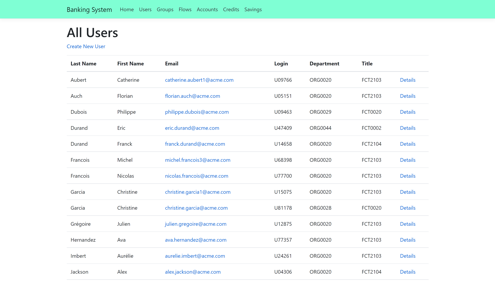
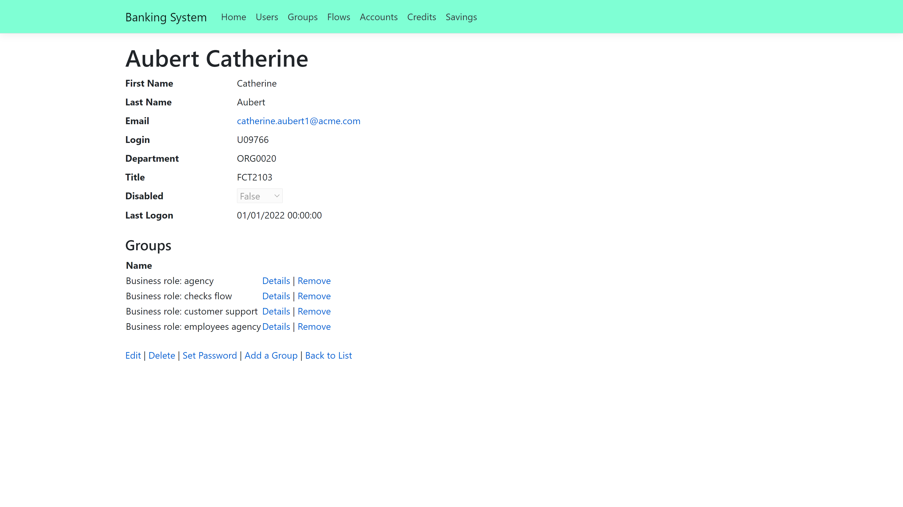

Run the Banking Demo Application
This guide shows how to set up and run the Banking demo application.
Banking Application Description
The Banking application is a demo application that represents a web based external system. The Banking application contains:
- A main page
- A list of users, accessible by clicking on Users at the top of the page. It is possible to add a user by clicking on Create New User

- A list of groups, accessible by clicking on Groups at the top of the page. Clicking on Details on a group shows the users belonging to that group
- A user's details page for each user, accessible by clicking on Details on a user in the users list

The most interesting part of the Banking application is a user's page. On a user's page, it is possible to:
- Edit the user's information
- Delete the user
- Add the user to a group
- Remove the user from a group
- Set the user's password
The Banking application uses a database named BankingSystem as a data source. The changes made to a user are applied to the database, and will be saved.
The Banking application exposes an API that complies with SCIM 2.0 (RFC 7643 & RFC 7644) standards. This API provides:
-
Token retrieval in two different ways — Login/Password and Client Credentials. This is not real authentication so you can input any values, as the system only verifies if the fields are empty.
-
A schema endpoint (/Schemas) that returns metadata describing SCIM resource types. This includes attributes, types, mutability, and required fields for Users and Groups, following SCIM 2.0 specifications.
-
Operations on users, including: Get list, Get by ID, Create, Update, and Delete (CRUD)
-
Operations on groups, limited to Get list only
NOTE: In the Banking Demo Application appsettings two parameters are available:
-
RequireAuthorization(default: true) — When enabled, the system checks whether a token is present in the request headers -
RequireSecureHeader(default: false) — When enabled, the system verifies that the SecureHeaderparameter is included in the request headers
Remember, a Postman collection is provided in the same folder as the executable (.exe) to facilitate API testing.
Running the Banking Application
The Banking Application is part of the Netwrix Identity Manager (formerly Usercube) SDK, and comes with prefilled sources. To run the Banking application:
Step 1 – Download the SDK.
Step 2 – Download the Runtime.
Step 3 – Create a database named BankingSystem.
Step 4 – Go to the Runtime folder.
Step 5 – Run ./Usercube-FillBankingDatabase.exe --connection-string {connection string} --sources-path {sources path} --banking-sql-path {banking sql path}, replacing {connection string} with the BankingSystem database connection string, {sources path} with the path to SDK/DemoApps/Sources, and {banking sql path} with the path to SDK/DemoApps/Banking.
Step 6 – Go to the SDK/DemoApps/Banking folder.
Step 7 – Run ./Banking.exe in a command prompt
Step 8 – In a web browser, enter the URL localhost:5000.
The Banking application is running, and the web browser is on the Banking home page.
To set the Banking application to another port, run /Banking.exe --urls http://localhost:{port number}. To access the application, enter the URL localhost:{port number} in a web browser.
Some ports are not recognized by web browsers, or may already be used. Choose a port wisely.